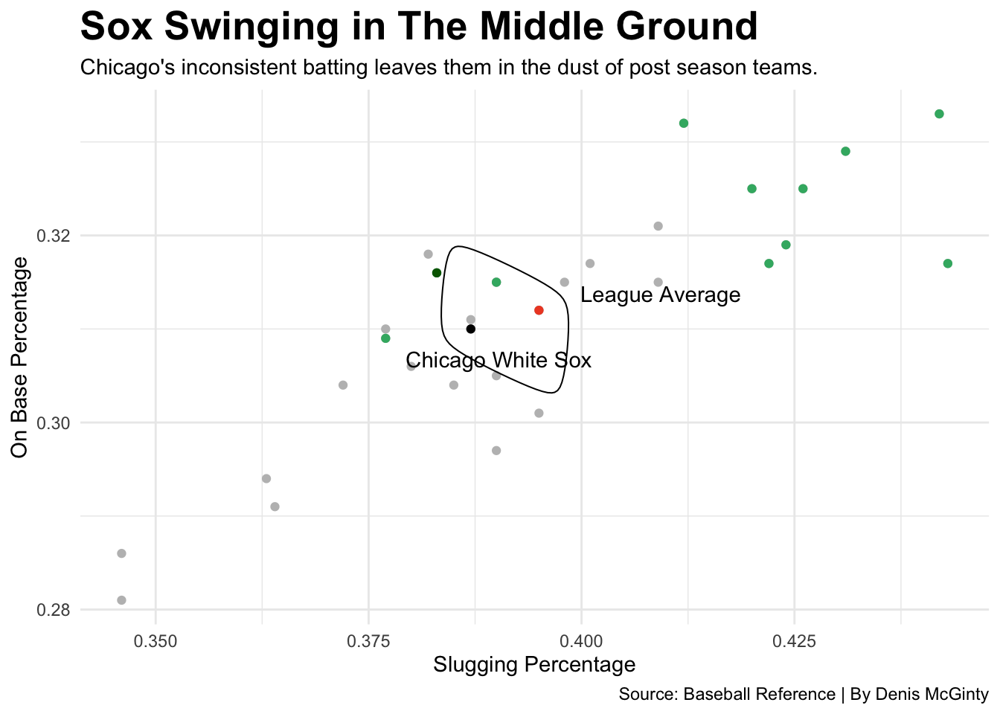

Why The 2022 White Sox Were The Most Average Team Possible
sports
data
sox
Author
Denis McGinty
Published
November 10, 2023
The 2022 Chicago White Sox were a disappointment beyond measure. No graphic or news article can ever encompass what south side fans felt. The team led half of the City of Chicago through a roller coaster. Being average is usually a word given to teams who are rebuilding or are a player away from a championship. Not for the White Sox, after a playoff appearance a year prior and a couple new faces from free agency, They were poised for a playoff run. In the worst division in baseball, the team was above .500 at the end of July. One game above .500. Maybe they were getting ready for a playoff run? Maybe they are still rebuilding and were expecting to lose 100 games? Nope. They were so inconsistent throughout the year that even they didn’t know what they were doing. By the end of the year, the White Sox ended with a perfectly even 81-81 record.
Too many games lost to make the playoffs. Too many games won for a good draft pick. Despite all of the media hype around the White Sox in the previous off season, They simply weren’t prepared and weren’t ready to be anything other than average. The worst thing a team can do to a fan is not have a plan. No plan to win currently and no plan to win in the future. The 3 time world series champion never spends money and never commits to a rebuild. The owner of the Sox, who also owns the bulls, has been bailed out by the greatest basketball player of all time and the greatest playoff push of all time. Nothing more, nothing less. The team’s hitting shows the abyss they find themselves in.
Code
library(tidyverse)library(ggalt)library(ggplot2)library(ggrepel)Teams <-read_csv("2022baseball.csv")SOX <- Teams |>filter(Tm =="Chicago White Sox")avg <- Teams |>filter(Tm =="League Average")Playoffteams <-c("Tampa Bay Rays", "Cleveland Guardians", "Philadelphia Phillies", "St. Louis Cardinals", "San Deigo Padres", "New York Mets", "Los Angeles Dodgers", "Atlanta Braves", "Seattle Mariners", "Toronto Blue Jays", "New York Yankees", "Houston Astros")Cleveland <- Teams |>filter(Tm =="Cleveland Guardians")Soxandav <-c("League Average", "Chicago White Sox")Soxandavg <- Teams |>filter(Tm %in% Soxandav)PlayoffTeams<- Teams |>filter(Tm %in% Playoffteams)ggplot() +geom_point(data=Teams, aes(x=SLG, y=OBP),color ="grey") +geom_point(data=SOX, aes(x=SLG, y=OBP),color ="black") +geom_point(data=PlayoffTeams, aes(x=SLG, y=OBP),color ="#3cb371") +geom_point(data=Cleveland, aes(x=SLG, y=OBP),color ="darkgreen")+geom_point(data=avg, aes(x=SLG, y=OBP),color ="#EE4B2B") +geom_text_repel(data=SOX, aes(x=SLG, y=OBP-.005, label=Tm)) +geom_text_repel(data=avg, aes(x=SLG+.011, y=OBP, label=Tm)) +geom_encircle(data=Soxandavg, aes(x=SLG, y=OBP), s_shape=0.6, expand=.05, colour="black") +labs(x="Slugging Percentage", y="On Base Percentage", title="Sox Swinging in The Middle Ground", subtitle="Chicago's inconsistent batting leaves them in the dust of post season teams.", caption="Source: Baseball Reference | By Denis McGinty" ) +theme_minimal() +theme(plot.title =element_text(size =20, face ="bold") )

The South Side hitters incorporate everything it meant to be a White Sock on the stat sheet. Completely complacent with being average. Over the previous 6 years before this season, the Sox were ‘rebuilding’ which actually meant sitting there and wasting hall of fame talent. One of if not the only bright spot over that period was Josè Abreu. Abreu showed up every day and did his work for a bottom tier baseball team who had rumors of relocating and honestly should’ve been relegated to AAA ball. If the front office of the Sox knew better, they should’ve swooped him up out of Cuba when he was 16 and taken 6 year old Luis Robert while they were at it. Robert has been a promising young cuban prospect since he was first discovered and has shown his true potential in 2023. But even these two godly players couldn’t hit for power and were perfectly fine with being average in 2022.
Code
library(tidyverse)library(ggalt)library(ggrepel)Players22 <-read_csv("22Playersbball.csv")Playersclean <- Players22 |>mutate(Name=gsub("\\*", "", Name)) |>mutate(Name=gsub("\\#", "", Name)) SOX22 <- Playersclean |>filter(Tm =="CHW")Players22f <- Playersclean |>filter(PA >125)MLB <-c("CHW", "ARI", "ATL", "BAL","BOS","CHC", "CIN", "CLE", "COL", "DET", "HOU", "KCR", "LAA", "LAD", "MIA", "MIL", "MIN", "NYM", "NYY", "OAK", "PHI", "PIT", "SDP", "SEA", "SFG", "STL", "TBR", "TEX", "TOR" )MLB<- Players22f |>filter(Tm %in% MLB)MLBlim<- MLB |>filter (H>65, RBI>30)Soxlim<- SOX22 |>filter (H>65, RBI>30)ggplot() +geom_point(data=MLBlim,aes(x=H, y=RBI, size=HR),alpha = .3, color="light grey") +geom_point(data=Soxlim,aes(x=H, y=RBI, size=HR),alpha = .3, color="black") +scale_size(range =c(1, 10), name="Home Runs") +geom_smooth(data=MLBlim, aes(x=H, y=RBI), method="lm", colour="red") +geom_text_repel(data=Soxlim, aes(x=H, y=RBI-.005, label=Name)) +labs(x="Hits", y="Runs Batted In", title="The White Sox knock in an average amount", subtitle="The south side sluggers couldn't hit for power which leaves their star players average at best.", caption="Source: Baseball Reference | By Denis McGinty" ) +theme_minimal() +theme(plot.title =element_text(size =20, face ="bold"), panel.grid.minor =element_blank() )
The only other bright spot throughout the year was the pitching. Well not all of them, just Dylan Cease and Liam Hendriks. Hendriks who is now a cancer survivor and advocate, and Cease who was the Cy Young runner-up in 2022 were the only chances the White Sox pitching staff had. But how do you save games for a team that doesn’t win and how can one rely on a starter when they only pitch once every 5 days? Because of this, The White Sox pitching situation was the same as the rest of the team as a whole. Average.
Code
mlbp <-read_csv("mlbp.csv")mlbpa <- mlbp |>filter (`#P`<870)Soxp <- mlbpa |>filter (Tm =="Chicago White Sox")ALcentral <-c("Kansas City Royals", "Cleveland Guardians", "Detroit Tigers", "Minnesota Twins")Playoffteams <-c("Tampa Bay Rays", "Cleveland Guardians", "Philadelphia Phillies", "St. Louis Cardinals", "San Deigo Padres", "New York Mets", "Los Angeles Dodgers", "Atlanta Braves", "Seattle Mariners", "Toronto Blue Jays", "New York Yankees", "Houston Astros")Playoffs<- mlbpa |>filter(Tm %in% Playoffteams)ALcentralxs <- mlbpa |>filter(Tm %in% ALcentral)avgg <- mlbpa |>filter(Tm =="League Average")ggplot() +geom_bar(data=mlbpa, aes(x=reorder(Tm, -ERA), weight=ERA),fill="light grey") +geom_bar(data=Soxp, aes(x=reorder(Tm, -ERA), weight=ERA),fill="black") +geom_bar(data=ALcentralxs, aes(x=reorder(Tm, -ERA), weight=ERA),fill="grey") +geom_bar(data=Playoffs, aes(x=reorder(Tm, -ERA), weight=ERA),fill="#3cb371") +geom_bar(data=avgg, aes(x=reorder(Tm, -ERA), weight=ERA),fill="red") +coord_flip() +theme_light() +labs(x="Teams", y="Earned Run Average (ERA)", title="Chicago's pitching is the mark to beat", subtitle="The Sox pitching staff was carried by Dylan Cease to edge above league average.", caption="Source: Baseball Reference | By Denis McGinty" ) +theme(plot.title =element_text(size =20, face ="bold") )